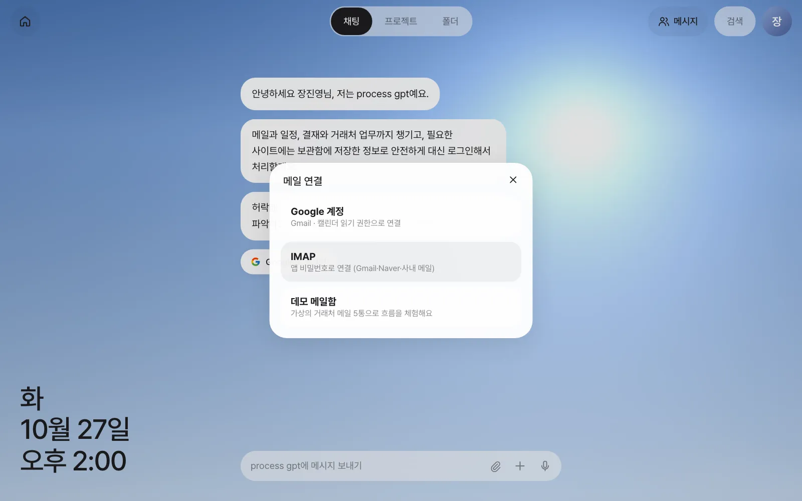
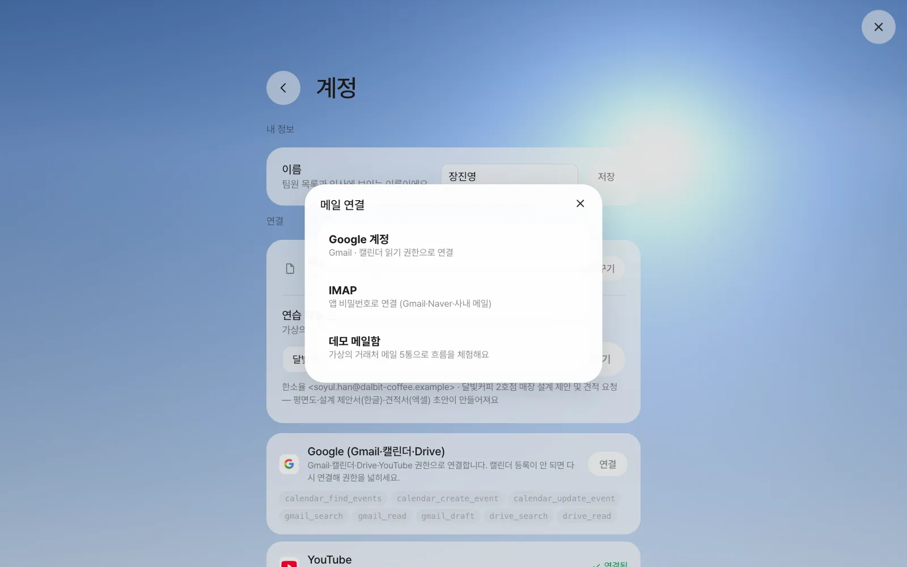
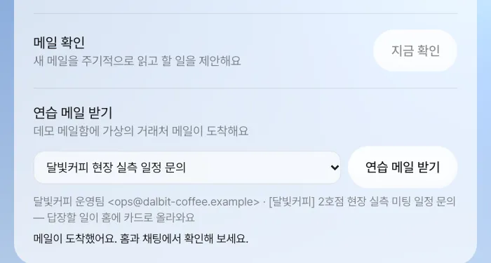
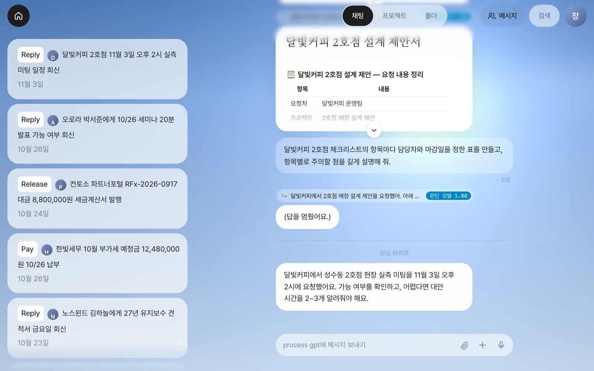
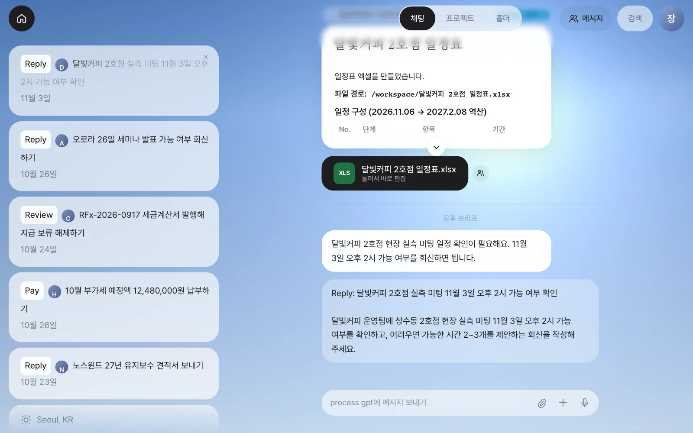
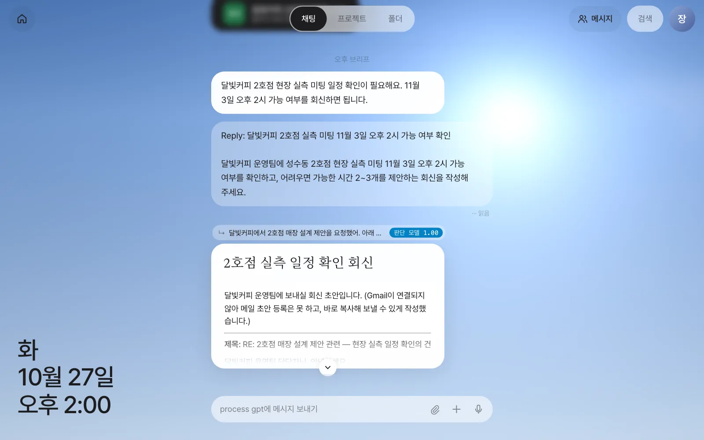

메일을 연결해 두면 비서가 몇 분마다 새 메일을 읽고, 처리할 일이 있으면 홈에 카드를 올리고 중요한 것은 브리프로 알려 줍니다. 달빛커피가 보낸 현장 실측 미팅 문의 메일이 카드가 되고, 그 카드를 눌러 회신 초안을 받기까지 따라 합니다.
왜 메일을 맡기나#
4장까지는 여러분이 먼저 비서에게 말을 걸었습니다. 이번에는 비서가 먼저 메일을 읽고 할 일을 찾아 오게 합니다. 하루에 받는 메일 가운데 정말 손이 가야 하는 것은 몇 통 안 됩니다. 문제는 그 몇 통을 찾고, 무엇을 해야 하는지 정리하고, 답장을 쓰는 데 시간이 든다는 점입니다. 메일 비서는 이 세 가지를 대신합니다.
| 비서가 하는 일 | 여러분이 보는 것 |
|---|---|
| 새 메일을 주기적으로 읽는다 | 따로 할 일 없음 |
| 처리할 일이 있는 메일을 골라 낸다 | 홈에 할 일 카드 (Reply·Pay·Book… + 한 줄 + 기한) |
| 지금 무엇이 중요한지 요약한다 | 채팅에 브리프 (모닝·오후·이브닝 브리프) |
| 카드를 누르면 그 일을 시작한다 | 채팅에 회신 초안, 확인할 점 |
| 문서를 보내 달라는 메일이면 초안부터 만든다 | 파일 카드와 홈의 「Review」 카드 (9장) |
광고와 뉴스레터는 건너뜁니다. 1장에서 데모 메일함의 다섯 통 가운데 뉴스레터 한 통만 카드가 생기지 않은 것도 이 때문입니다.
연결 방법 세 가지#
1장의 첫 화면 안내에서 「Google에 로그인」(또는 「메일 연결하기」)을 누르면 연결 방법을 고르는 창이 떴습니다.

| 방법 | 무엇이 필요한가 | 특징 |
|---|---|---|
| Google 계정 | 관리자가 서버에 Google 연결을 설정해 두어야 합니다(1장) | Gmail을 읽고, 캘린더 일정을 확인·등록하고, Gmail에 답장 초안을 만들어 둘 수 있습니다. Google이 내준 접근 권한(토큰)은 보관함에 암호화해 둡니다 |
| IMAP | 메일 서버 주소(예: imap.gmail.com), 메일 주소, 앱 비밀번호 |
Gmail·네이버·사내 메일 등 IMAP을 여는 곳이면 됩니다. 비밀번호는 보관함에만 암호화해 저장됩니다. 읽기만 합니다 |
| 데모 메일함 | 없음 | 가상의 거래처 메일 다섯 통이 들어 있는 연습용 메일함. 이 튜토리얼은 이것으로 진행합니다 |
연결 방법은 나중에 바꿀 수 있습니다. 「설정 › 계정 › 연결」의 메일 줄에서 「연결 바꾸기」를 누르면 같은 창이 다시 열리고, Google 계정·IMAP·데모 메일함 가운데 하나를 고르면 그 메일함으로 바뀝니다. 데모 메일함으로 연습한 뒤 실제 메일로 옮길 때 씁니다. Google 계정은 같은 화면 아래 Google 카드의 「연결」로도 연결되고, 연결하면 메일 확인도 Gmail로 바뀝니다.

비서는 메일을 어떻게 읽나#
- 5분마다 새 메일을 확인합니다. 기다리기 싫으면 「설정 › 시스템 설정 › 메일 확인」의 「지금 확인」을 누릅니다.
- 최근 이틀 사이의 메일 가운데 아직 읽지 않은 것만 봅니다. Gmail은 프로모션·소셜 탭을 빼고 최대 20통까지 봅니다.
- 새 메일이 없으면 AI 모델을 부르지 않습니다. 새 메일이 있으면 그 메일들을 한 번에 모델에게 보여 주고 카드·브리프·초안을 정합니다.
- 모델에게 가는 것은 메일의 보낸 사람, 제목, 날짜, 본문 앞부분(800자) 입니다. 첨부 파일은 보내지 않습니다.
따라 하기 1 — 달빛커피 메일 받기#
3장에서 정리한 달빛커피 건에 후속 메일이 옵니다. 제안서를 쓰기 전에 현장을 재 보자는 문의입니다.
| 항목 | 내용 |
|---|---|
| 보낸 사람 | 달빛커피 운영팀 <ops@dalbit-coffee.example> |
| 제목 | [달빛커피] 2호점 현장 실측 미팅 일정 문의 |
| 본문 | 안녕하세요, 달빛커피 운영팀입니다. 성수동 2호점 건으로 연락드립니다. 11월 3일 오후 2시에 매장 현장에서 실측 미팅이 가능하실지 여쭙습니다. 그 시간이 어려우시면 가능한 시간을 두세 개 알려 주세요. 현장 주소는 회신 주시면 따로 보내 드리겠습니다. 감사합니다. |
Gmail이나 IMAP을 연결했다면 이 내용으로 자기 자신에게 메일을 보내면 됩니다. 데모 메일함을 쓰고 있다면 이 메일을 화면에서 받습니다.
- 「설정 › 시스템 설정」을 엽니다. 맨 아래에 「연습 메일 받기」가 있습니다(「설정 › 계정」의 「연결」 아래에도 같은 칸이 있습니다).
- 목록에서 달빛커피 현장 실측 일정 문의를 고릅니다. 아래에 보낸 사람과 제목, 무엇이 생기는지(“답장할 일이 홈에 카드로 올라와요”)가 보입니다.
- 「연습 메일 받기」를 누릅니다. “메일이 도착했어요. 홈과 채팅에서 확인해 보세요.”가 뜨면 됩니다.

연습 메일은 실제 메일처럼 비서가 바로 읽습니다. 목록에는 이 메일 말고도 9장에서 쓰는 “달빛커피 2호점 제안·견적 요청”, 엑셀 비용표를 부탁하는 “한빛이벤트 송년회 다과 비용표 요청”, “노스윈드 세금계산서 발행 요청”이 있습니다. 데모 메일함에서만 보이는 칸이므로, 실제 메일을 연결한 계정에서는 자기 주소로 메일을 보내 연습하세요.
메일이 들어오고 1분 안팎이면 홈 맨 위에 카드가 생기고, 채팅에 브리프(시각에 따라 모닝·오후·이브닝 브리프)가 붙습니다.

확인할 것: 홈 맨 위에 Reply로 시작하는 달빛커피 카드(예: “달빛커피 2호점 실측 미팅 11월 3일 오후 2시 가능 여부 확인”)와 그 아래 기한 11월 3일이 있고, 채팅에 브리프(“달빛커피 2호점 현장 실측 미팅 일정 확인이 필요해요…”)가 있으면 됩니다. 동사는 Reply 대신 Book(예약)으로 나올 수도 있습니다.
이 메일은 문서를 보내 달라는 메일이 아니므로 초안은 만들어지지 않습니다. 제안서와 견적서를 요청하는 메일이 오면 무엇이 달라지는지는 9장에서 봅니다.
따라 하기 2 — 카드로 일 시작하기#
카드를 누르면 비서가 그 일을 바로 시작합니다. 카드 글자가 반짝이며 “진행 중”으로 바뀌고, 채팅에는 카드의 문장과 함께 비서가 카드를 만들 때 미리 적어 둔 지시가 내 메시지처럼 올라갑니다. 무엇을 시켰는지 그대로 보이므로, 의도와 다르면 바로 이어서 고쳐 말하면 됩니다.

실습에서는 1~2분 뒤 회신 초안이 문서 카드로 왔습니다.

실습에서 받은 초안에는 다음이 들어 있었습니다.
- 제목 “RE: 2호점 매장 설계 제안 관련 — 현장 실측 일정 확인의 건”과 본문 — 11월 3일 오후 2시 참석 가능, 실측 전에 준비해 달라는 것(출입 안내, 전력 용량, 배기 위치)
- 일정이 바뀔 때를 위한 다른 시간 세 개
- “Gmail이 연결되지 않아 메일 초안 등록은 못 하고, 바로 복사해 보낼 수 있게 작성했습니다”라는 안내
- 확인할 점 — 우리 팀 캘린더가 실제로 비어 있는지, 실측 뒤 제안서 마감(11월 6일)까지 여유가 충분한지
확인할 것: 답 위의 줄이 달빛커피 대화를 가리키고, 회신 초안에 11월 3일 오후 2시와 대안 시간이 들어 있으면 됩니다. 일을 마친 카드는 홈에서 사라집니다.
Google을 연결하면 한 걸음 더
Google 계정을 연결해 두면 비서가 캘린더에서 그 시간이 비었는지 확인하고, Gmail에 답장 초안을 만들어 둘 수 있습니다. 메일을 보내는 것은 여전히 여러분이 Gmail에서 합니다. 비서가 맡은 일에서 무엇까지 하게 할지는 지시로 정할 수 있습니다. 예를 들어 카드를 누른 뒤 “캘린더에도 11월 3일 2시 실측 일정을 넣어 줘”처럼 이어서 말합니다.
카드 다루기#
| 하고 싶은 것 | 하는 법 |
|---|---|
| 카드의 일을 시키기 | 카드를 누릅니다 |
| 필요 없는 카드 치우기 | 카드에 마우스를 올리면 오른쪽 위에 나타나는 × |
| 카드 없이 알림만 받고 싶을 때 | 채팅의 브리프만 읽고 카드는 ×로 치웁니다 |
| 내가 할 일을 카드로 남기기 | 채팅에서 금요일까지 달빛커피 견적 단가 확인하기, 홈에 할 일로 남겨 줘처럼 말하면 비서가 “홈에 할 일로 남겨뒀어요”라고 답하고 홈에 Remind 카드(기한: 그 금요일)를 만듭니다 |
다음 장으로#
메일은 비서가 바로 읽을 수 있는 곳에 있었습니다. 다음 장에서는 로그인해야 하는 웹사이트의 일을 브라우저 에이전트에게 맡기고, 비밀번호·카드 번호를 보관함에 안전하게 두는 법을 봅니다(6장).
확인 문제
- 데모 메일함의 다섯 통 가운데 WeeklyTech의 뉴스레터(“이번 주 AI 뉴스 요약”)는 홈에 카드가 생기지 않았습니다. 왜 그럴까요? Gmail이나 IMAP을 연결했다면 자기 주소로 광고 메일을 하나 보내 확인해 보세요.
- 메일 비서가 AI 모델에게 보내는 것과 보내지 않는 것을 하나씩 적어 보세요.
- 달빛커피가 다음 메일에서 “제안서와 견적서를 11월 6일까지 보내 주세요”라고만 썼다면, 이번 장과 무엇이 달라질까요?
답
- 비서가 광고·뉴스레터는 처리할 일이 아니라고 보고 건너뛰기 때문입니다. 메일은 읽지만 카드는 만들지 않습니다. 실습에서 광고 메일을 넣어 봤을 때도 새 메일 한 통을 읽었을 뿐 할 일 카드는 0장이었습니다. 혹시 카드가 생기면 ×로 치우면 됩니다.
- 보내는 것: 새 메일의 보낸 사람·제목·날짜·본문 앞부분(800자). 보내지 않는 것: 첨부 파일, 이미 읽은 메일, IMAP 비밀번호와 Google 토큰(보관함에만 있음).
- 문서를 보내 달라는 메일이므로, 비서가 묻지 않고 제안서·견적서(설계 제안이면 평면도까지) 초안을 먼저 만들기 시작하고, 홈에는 「Review」 초안 검토 카드가 생깁니다(9장).